- Delete segment suppresses current segment from data model. Segment contents are attached to previous segment end.
- Edit segment properties opens segment properties dialog box.
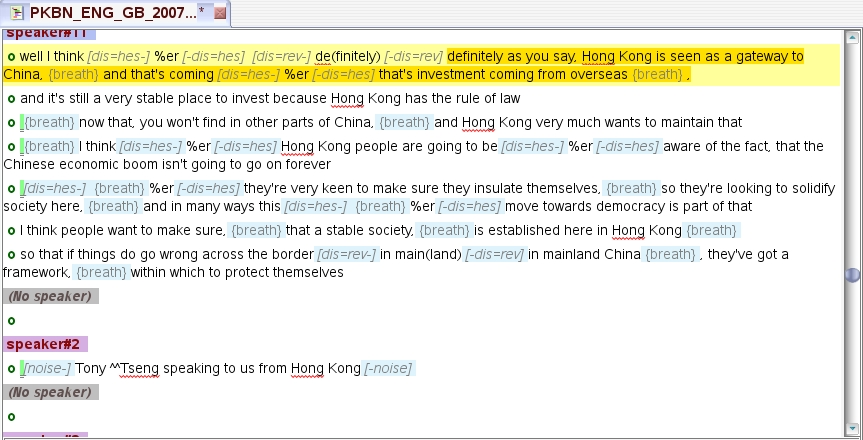
The text widget supports the display and input of textual annotations for current audio signal, typically the segmentation and verbatim transcription of an audio signal.
The text widget offers full UTF-8 support for text input and rendering. Text display uses the native language script, and bidirectionality is well handled.
The input method relies either on internal keyboard mappings, or on common input methods like IME (windows) or SCIM (Linux).
This page describes main editing functionalities:
The following description assumes that a section / turn / segment segmentation scheme is configured for applicable annotation conventions.
| 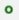 | The basic signal segmentation unit is the "segment" which identifies a continuous portion of signal with homogeneous acoustic conditions, holding speech or not. The segment start is materialized in text widget by a green circle - as shown - placed just before the transcription text. | |
| 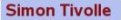 | A "turn" is a continuous sequence of speech segments with the same speaker, including possible short non-speech segments. A turn start is attached to a segment start. A turn start is materialized in text widget by a label - as shown - displaying the turn speaker's name (or "No speaker" when it corresponds to a non-speech signal portion), placed just before the start mark of the segment. | |
| A section is a continuous set of turns with a thematic homogeneity. A section start is attached to a turn start. Section starts are materialized in text widget by a label - as shown - displaying the section name, placed just before a turn label. Sections can also be used to tag rather long non-transcripted signal parts. |
Those labels are not editable. Contextual menus are associated to each label type.
Turns and segments layouts can be "widespread", as shown in above screenshot, where turns labels are isolated on a separate line. They can also be more compact, with turns labels being placed at the start line of the first segment. This is only a matter of presentation, and has no impact on other editor functionalities.
The following screenshot illustrates a "compact" layout for arabic language.
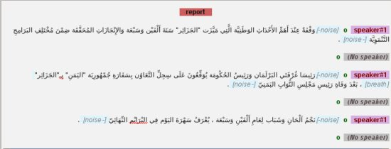
Presentation preferences can be set through TranscriberAG Configuration panel.
Pressing <return> (or using Annotate > New segment menu option) inserts a new segment boundary for the current audio cursor value at current text cursor position.
If the cursor was set at a line end, a new blank line is inserted starting with a segment mark. If text cursor was set within line text, then the text is split at cursor position, and the remaining line goes into a new segment line.
When a splitted segment is enclosed by an event tag, then this event is also splitted, and the new segment is also enclosed by the event tag, as shown:
The newly created segment is displayed in corresponding segment track in the audio widget.
It is possible to define intermediate timestamps within a segment, at a word or an event start: place the text cursor at the desired position, place the signal cursor at the desired offset,then press <alt+return> keys, or select Add a time stamp.
A timestamp mark will be displayed in the text buffer, showing the action has been taken into account, as shown below:
Warning : If a qualifier or a foreground event is located at a segment start, the timestamp green mark is displayed before the element tag. This is not an intermediate timestamp (it can't be deleted). It just indicates that the qualifier or the event is linked to the start of the segment:
Pressing <ctrl+t> (or using Annotate > New turn menu option) inserts a new turn anchored at the current segment start. Turn speaker is by default set to the last used speaker. New turn label is displayed at segment start, and turn contextual menu is automatically popped to allow actual speaker name selection.
Pressing <Escape> discards the popup menu. Selecting Delete turn deletes newly inserted turns.
The newly created turn is displayed in corresponding turn track in the audio widget.
Trying to create a new turn on an existing turn will result in an overlapping turn, see below.
Another turn creation modality is provided through the audio widget, see section Creating a new turn for current selection in audio widget description
An overlapping speech turn can be created in two ways:
| 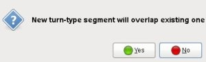 | If "yes" is selected, an overlapping turn label is inserted and and turn contextual menu is automatically popped to allow selection of the current speaker's name. |
The overlapping turn label and attached segment mark are indented from "base" turn.
When the overlapping turn is created on a turn having 2 speech segments, as shown below, the new overlapping turn will span over the first segment only, "base" turn will automatically be split at first segment end.
| 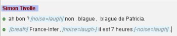 --->>> gives --->>> | 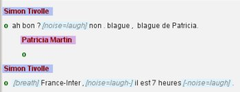 |
The newly created turn is displayed in corresponding turn track in the audio widget.
TranscriberAG forbids new overlapping turn creation when one already exists.
Pressing <ctrl+r> (or using Annotate > New section menu option) inserts a new section anchored at current segment start. A section label is inserted before the turn label, and section contextual menu is automatically popped to allow selection of the current section type.
If the segment start doesn't correspond to a turn start, then a new turn is automatically inserted at segment start, and turn contextual menu is also automatically popped after section menu to allow selection of the current speaker's name.
Pressing <ctrl+b> (or using Annotate > New background menu option) inserts a new background anchored at current signal cursor position.
Backgrounds start "((o-))"and end "((-o))" marks are inserted in text widget in corresponding segments, as shown below. The background properties dialog is automatically popped, to allow background type and noise level definition. Background brackets are noted like this:
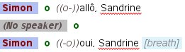
TranscriberAG offers classical text editing features:
When moving the cursor with arrows, TranscriberAG automatically sets it to editable positions (ie. skips non editable labels).
Verbatim transcription of speech segment uses the native language script, and uses the native writing direction, ie left to right (LTR) for most languages, right to left (RTL) for arabic and hebraic languages (yet writing top to down for some asian languages is not supported).
It is possible to mix several languages in the same segment line, TranscriberAG handles properly text display and cursor moves, in particular when switching from RTL to LTR.
Entities annotation is just the same process as event annotation; it can be defined thanks to <ctrl+e> shortcut, or by selecting Annotate > New named entity menu option. Again, the entity contextual menu is popped to allow entity type definition.
>> Back to page menuA right-click on the text widget pops up a contextual menu. The contents of this menu vary depending on the item clicked in the text widget. It also varies according to applicable annotation conventions.
All menus are described hereafter.
The following menu is popped when right clicking on text:
| 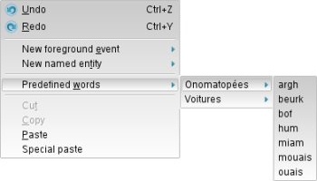 |
The following menu is popped when right clicking on a segment start tag:
|
Some corner cases may occur when deleting a segment:
| 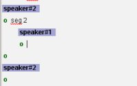 | It may happen after a deletion that turns and segments layout in text widget seems a bit awkward, as shown (this merely happens when deleting the first turn after an overlapping turn). This as no impact on edition. Use <ctrl+l> shortcut or File > refresh menu option to restore a correct layout. |
The following menu is popped when right clicking on a speaker tag, or when a new turn is created:
| 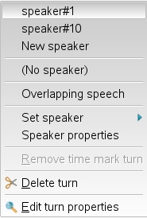 |
Some corner cases may occur when deleting a turn:
| It may happen after a deletion that turns and segments layout in text widget seems a bit awkward, as shown (this merely happens when deleting first turn after an overlapping turn). This as no impact on edition. Use <ctrl+l> shortcut or File > refresh menu option to restore a correct layout. |
| 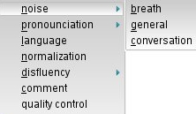 |
The following sub-menu corresponds to foreground events (can be popped by right clicking on a qualifier event):
| 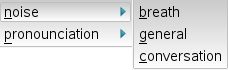 |
| 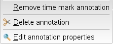 |
When right clicking on an entity tag (or when <ctrl+e> is used), the following menu is popped:
| 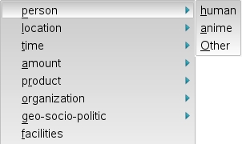 |
| 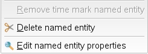 |
Double-clicking on a section tag or selecting Edit section properties in section contextual menu opens the following dialog box, allowing to edit section descriptions. The Language combo allows to set the current input language (by default it is set to "system" language).
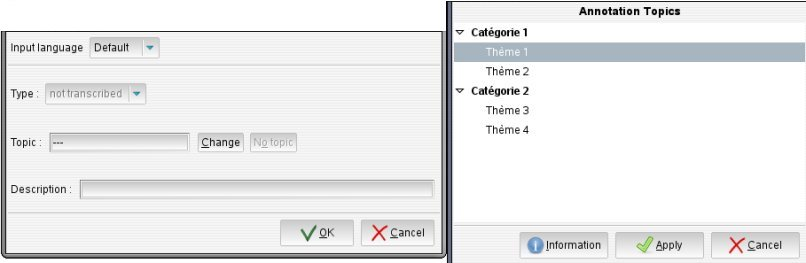
Through this dialog, one can also define the main topic associated to current section. Topic is to be seleected from the topics list defined in current annotation conventions, by clicking on Change button, or let undefined if none is matching current section contents (which can be done with No topic button). A short description of the contents of the section can also be entered.
Selecting Edit turn properties in turn contextual menu opens the following dialog box:
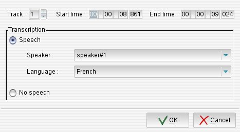
Through this dialog, one can set turn speakers and turn languages.
Pressing <ctrl+b> makes the following popup appear:
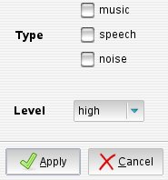
This popup allows to define background type and noise level.
Double-clicking on an event tag or selecting Edit event properties in the event contextual menu (displayed when right-clicking on event tag) opens the following dialog box, allowing to edit event description, with respect to applicable annotation conventions.
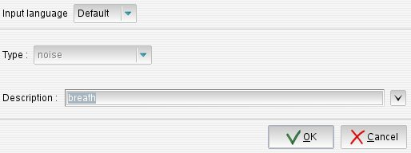
If event type is defined as non-editable, one can only select a new description from predefined subtypes listed in description combo; if it is defined as editable, a free description can also be input. The Language combo allows to set keyboard mapping for event description input (by default it is set to "system" language).
Event type cannot be modified through this dialog. It can be changed by right-clicking on event tag in annnotation editor text widget, and selecting a new type through the contextual menu.
Double-clicking on an entity tag or selecting Edit named entity properties in entity contextual menu (displayed when right-clicking on entity tag) opens the following dialog box, allowing to edit entity description, with respect to applicable annotation conventions.
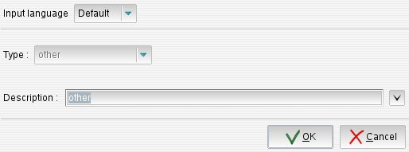
If entity type is defined as non-editable, one can only select a new description from predefined subtypes listed in description combo; if it is defined as editable, a free description can also be input. The Language combo allows to set keyboard mapping for entity description input (by default it is set to "system" language).
Entity type cannot be modified through this dialog. It can be changed by right-clicking on entity tag in annnotation editor text widget, and selecting a new type through the contextual menu.
>> Back to page menuKeyboard mapping can be set in various ways:
Chinese language input is supported via external input methods: SCIM on Linux platforms, IME on Windows platforms.
To enable Chinese input mode, select SCIM mode in the language selector in the toolbar, and select Smart Pinyin in SCIM or IME toolbar (which is generally located in the lower right corner of the display on unix platforms, on the top the the display on windows platform)
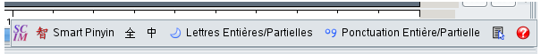
Easy switching between Chinese input mode and default keyboard input mode in SCIM is possible with the following keyboard shortcut: press and release <Alt> key then press (left or right) <Shift> key.
Pressing <ctrl+f> shortcut or selecting Search menu activates search function. The search window can be opened in 2 modes:
It is possible to switch from one mode to the other by clicking on button in search toolbar or in search dialog. Default mode can be set in TranscriberAG Configuration window.
The keyboard focus is set on search criteria field. Previous criteria can be reloaded by clicking on the arrow right to search criteria
Clicking on Next button (or pressing <F3> key in toolbar mode) allows to go to next occurrence. Clicking on Previous button (or pressing <shift + F3> key in toolbar mode) allows to go to previous occurrence. If no next or previous occurrence is found, the search criteria background is set to red.
Research options
Checking Whole word checkbox restricts search to whole words only.
The Case sensitive checkbox allows the research to be sensitive or not.
A combo list allows you to specify where searching for the martching term: in edition text, in tags text, or in all text.
The Language combo allows to set the input language specifically for the search criteria.
Specific dialog options
In dialog box mode, extra search and replace options are available.
The Scope options allows to set the searched text range (in whole buffer / in selected text only). If some text is selected when activating search function, then it is set as search criteria.
The Replace with criteria allows to set a replacement string for search string. First occurrence to replace must first be searched using Next or Previous buttons. Clicking on Replace button replaces current occurrence and moves to next occurrence. Clicking on Replace all button replaces all occurrences in buffer.
The Close (or ) button closes the search window.
Clicking the "Select speaker" button opens the local speaker dictionary list of the curent file |
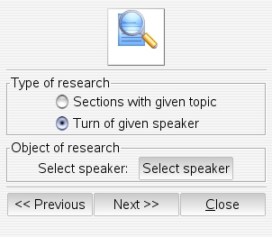 |
Clicking the "Select topic" button opens the topic selection dialog |
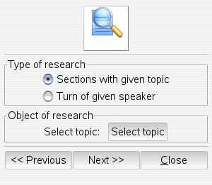 |
The clipboard stores words or pieces of text, which can be pasted in the text area. This is useful to ease the repetitive input of complex family names or places, for instance, with correct spelling. Text can be imported in the clipboard from a text widget, and exported back from the clipboard to a text widget.
To use the clipboard, it must be opened either by clicking on clipboard icon in the toolbar, or pressing <shift+alt+c> shortcut. The following window is then opened:
| 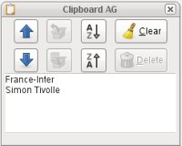 |
Clipboard contents are saved when TranscriberAG is closed, and restored when it is restarted.
Various input modes are supported, depending on target language, see section Keyboard mapping and input modes below.
Detailed annotation consists in adding "events" or "entities" to transcription text. These events and entities are marked by tags. These tags do not require a precise positioning vs signal timeline, and are therefore only "anchored" on text.
Events can be used to annotate some brief acoustic conditions than occur during speech, or eventual pronouncation problems, speech disfluencies, language changes. Entities are used to annotate person or location names, time information, etc., that occur in the text. As a special hack, events can also be used to add comments on transcription text.
The following image illustrates the detailed annotation of a speech segment, with disfluencies and normalisation of some terms. As shown, events appear as light-blue tags noted between square brackets, precising event type and subtype. By default, entities have no background color. Isolated events that do not overlap speech parts are noted "[ event ]". Events and entities that overlap one or more words are noted "[ event_start -] words [- event_end ]".
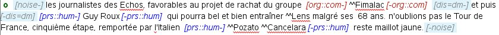
Isolated events can be then inserted at segment start or end, or between two words by placing the cursor at the right position and pressing <ctrl+d> shortcut, or selecting Annotate > New event menu option. The event contextual menu is then popped to allow event type definition, and an event tag will be added at current cursor position.
To define an overlapping event, one must select overlapped words, and press <ctrl+d> shortcut, or select Annotate > New event menu option. Again, the event contextual menu is popped to allow event type definition.